拆卸
断开蓄电池负极线束。
拆卸转向锁壳（上）、转向锁壳（下）。
拆卸怀档开关总成与旋转连接器。参见：怀挡开关 怀档开关总成拆装
拆卸主驾下护板。
断开转向柱上的3处线束线卡（①、②、③位置处）。
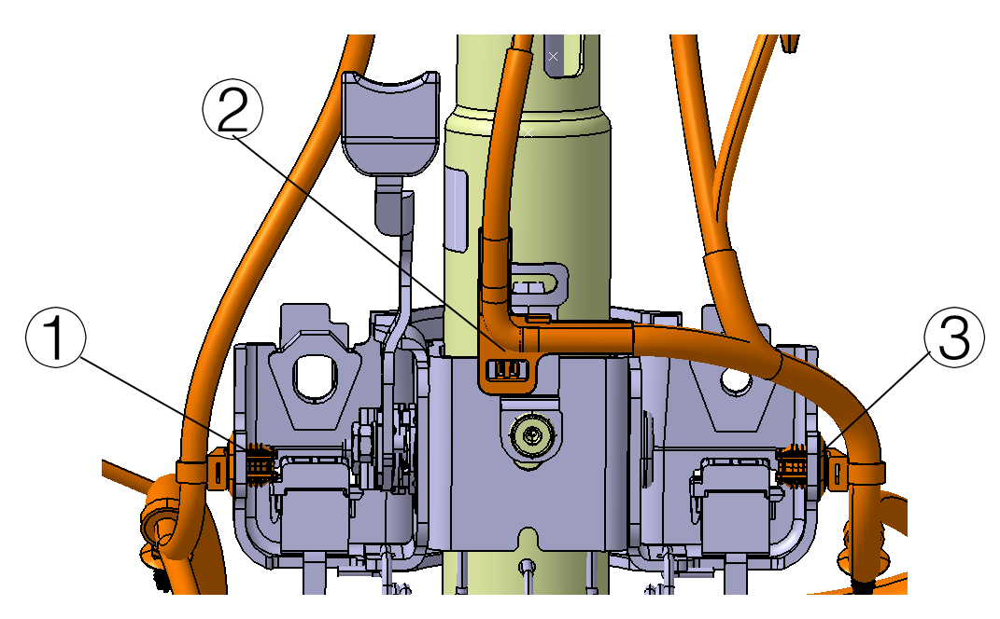
断开连接EPS控制器的整车电源线束及信号线束（下图粉色位置处）。
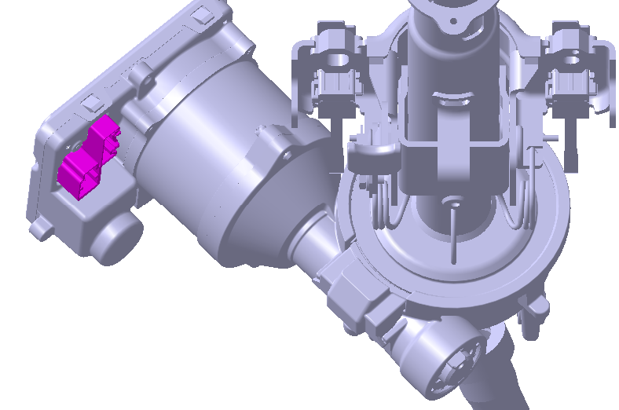
拆卸转向中间轴与转向器连接螺栓（下图粉色所示）。扭矩：56±3N.m
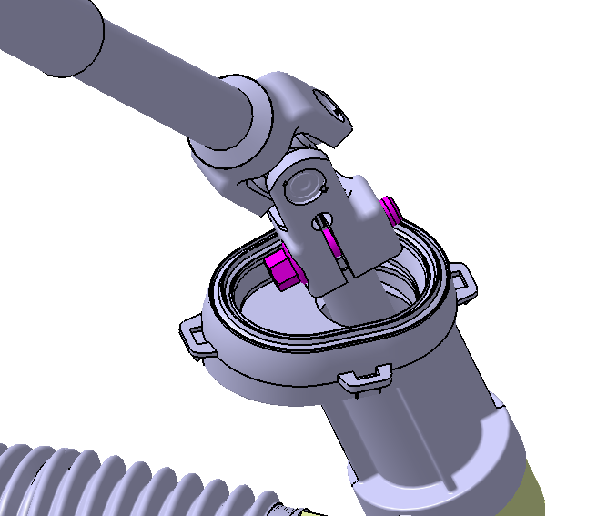
将转向中间轴节（下图灰色所示）叉从转向器上（下图粉色所示）拔出。
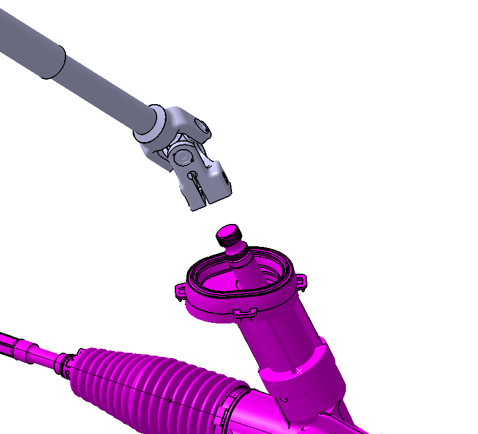
拆卸转向上轴下安装点固定螺栓（下图粉色所示）。扭矩：24±3N.m
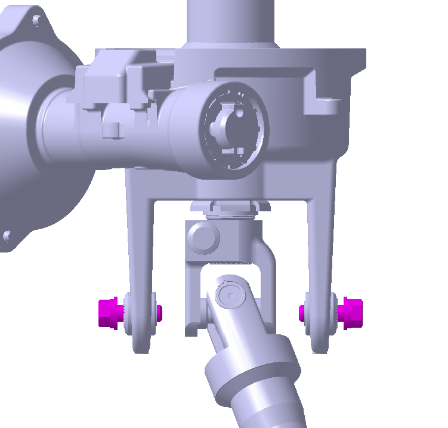
拆卸转向上轴上安装点两处固定螺母（下图粉色所示）。扭矩：24±3N.m
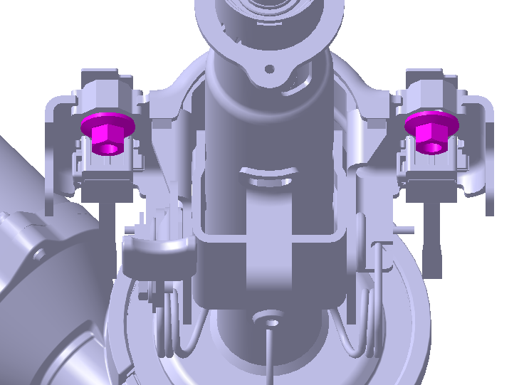
将转向柱总成从转向支撑上拿出。
安装顺序与拆卸顺序相反。
完成转向柱总成更换后，车辆需先进行软件刷写，然后进行四轮定位、中位标定和配置字写入，最后进行EOT学习。
软件刷写(适用于软硬分离车型)
获取软件，解压缩软件，清空内存卡中文件并将解压缩后文件中软件拷入内存卡中。
在确保车辆上电的情况下，将小盒子连接至OBD接口。
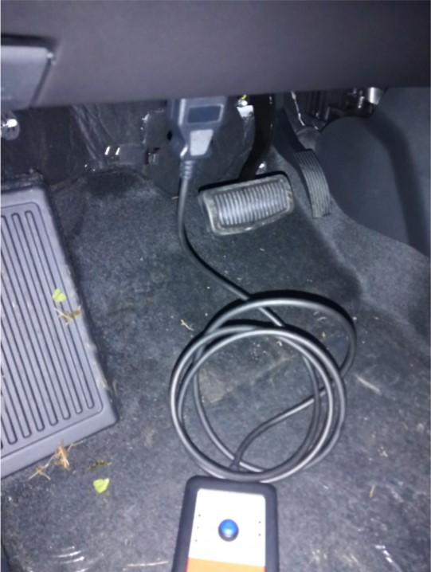
小盒子电源指示灯亮绿色，表明连接成功，按下开始按钮刷写程序。
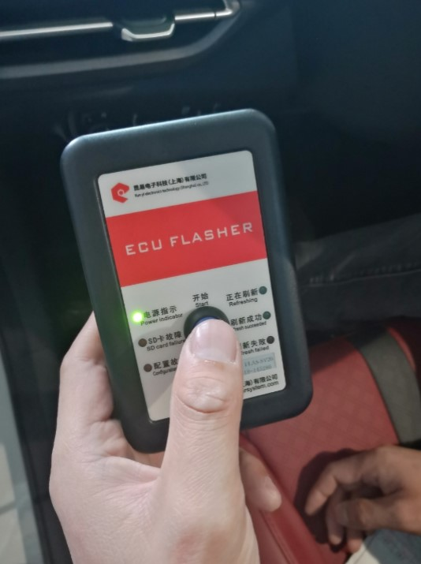
刷写过程中”正在刷写“按钮绿灯闪烁。
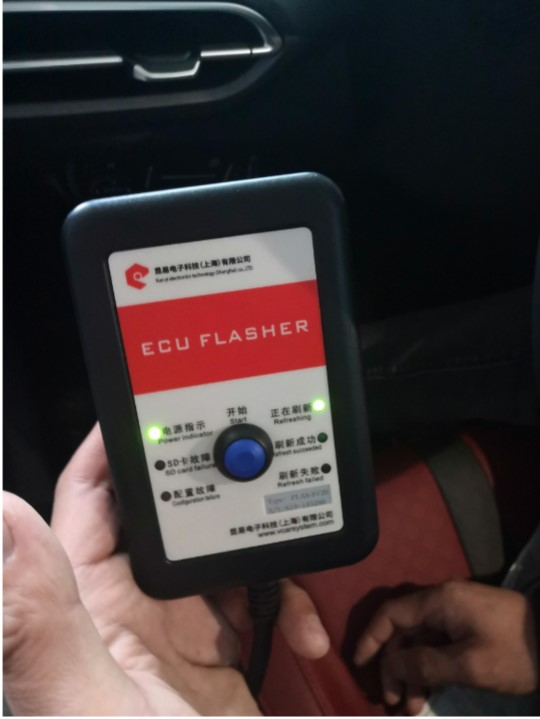
刷写完毕，”刷写成功“按钮亮绿灯。
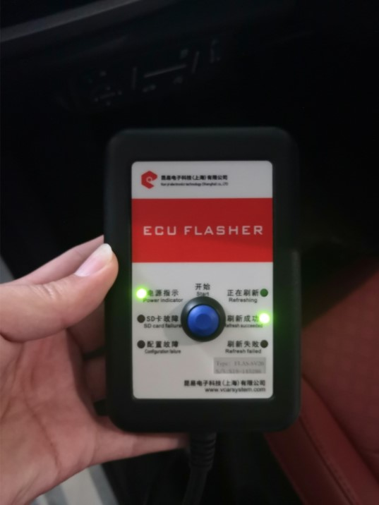
若刷写时出现刷写失败亮红灯，重复以上1-4步骤。
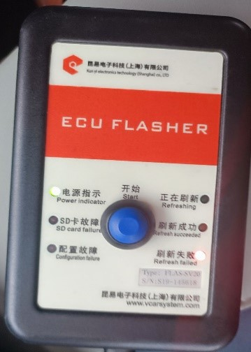
软件刷写完成后，需对车辆进行四轮定位，再对EPS进行“中位标定”和“下线配置”。参见：
标定要求 标定方法完成上述操作后，需对车辆进行EOT学习，具体方法为：将方向盘左打死并保持≥1秒，再回到中位；将方向盘右打死并保持≥1秒，再回到中位。